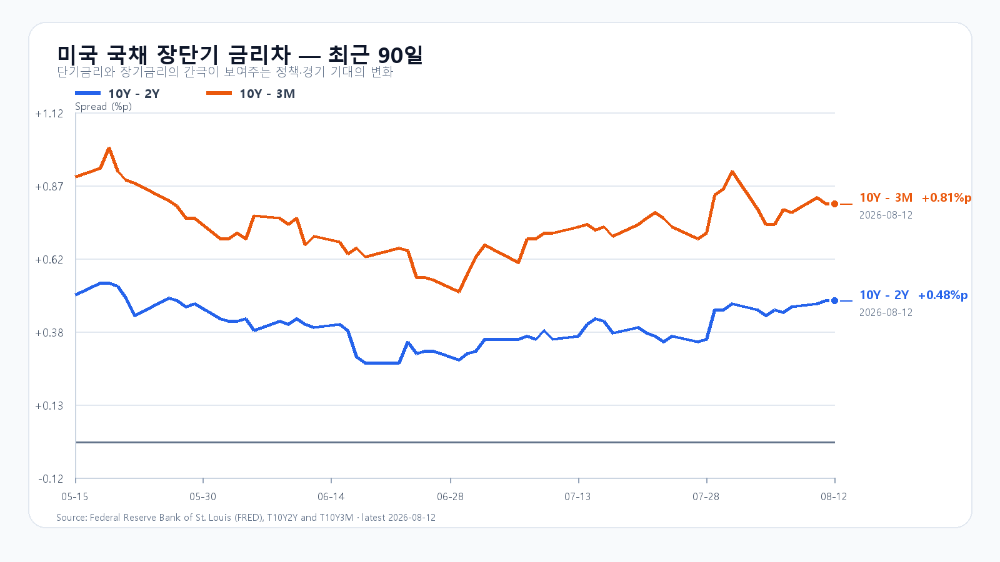
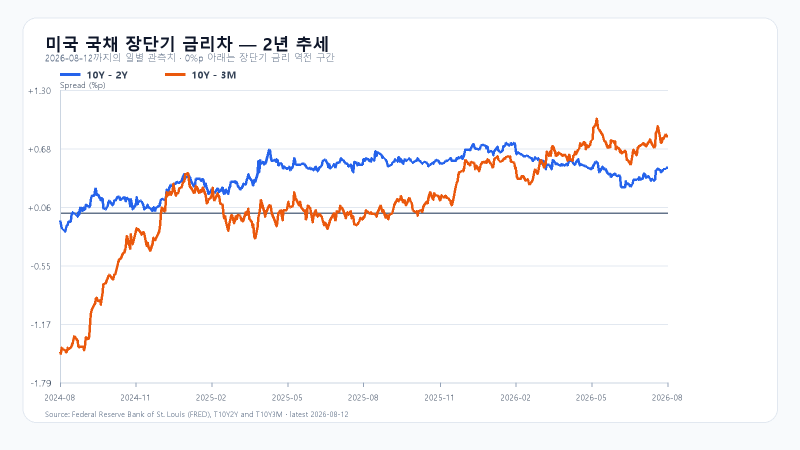

오늘의 한 문장
CPI 안도와 미국 반도체 급등은 한국 반도체의 강한 출발을 지지합니다. 다만 전날 외국인 2조7천억원 순매수와 KOSPI 3.68% 상승에 이미 기대가 많이 반영됐습니다. 6,668을 넘은 뒤에도 외국인 매수가 이어져야 상승이 하루 더 연장됩니다.
전일 급등은 외국인 2조7천억원이 만들었다
KOSPI는 6,438.50으로 출발해 6,668.43까지 오른 뒤 6,579.04로 마감했습니다. 외국인은 KOSPI 현물을 2조7,377억원, 기관은 6,157억원 순매수했고 개인은 3조1,782억원 순매도했습니다. 삼성전자는 6.68%, SK하이닉스는 5.54% 올랐습니다.
전날 장전 전망은 상승 방향을 맞혔지만 강세 종가 상단 6,550과 장중 경로 상단을 모두 넘겼습니다. 외국인 수급의 크기와 반도체 동반 상승을 과소평가했습니다. 오늘은 전날 순매수 총액을 지지선처럼 쓰지 않고, 개장 뒤 30분과 60분의 매수 속도가 유지되는지를 봅니다.
| 항목 | 확인값 | 오늘 기준 |
|---|---|---|
| KOSPI | 6,579.04 · +3.68% | 6,550 방어 · 6,668 돌파 |
| KODEX 레버리지 | 100,300원 · +8.34% | 98,000원 방어 · 103,500원 돌파 |
| 외국인·기관 현물 | +27,377억원 · +6,157억원 | 장 초반 매수 속도 유지 |
| 삼성전자·SK하이닉스 NXT | +4.50% · +5.25% | 시초가 뒤 상승분 유지 |
| 달러/원 | 1,419.00원 | 1,420원 돌파 여부 |
CPI 안도는 미국 반도체로 집중됐다
미국 7월 CPI는 전월 대비 0.1%, 전년 대비 3.4% 올랐습니다. 근원 CPI는 각각 0.2%, 2.5% 상승했습니다. 네 수치 모두 시장 예상과 같았고 전년 대비 상승률은 6월보다 낮아졌습니다. 월간 상승분의 약 3분의 2는 주거비가 만들었고 에너지는 1.5% 내렸습니다.
Nasdaq은 0.54%, SOXX는 2.32%, SMH는 2.08% 올랐습니다. Nvidia는 3.03%, AMD는 1.82%, Micron은 4.92% 상승했고 Broadcom은 보합권이었습니다. Micron의 상승은 한국 메모리주에 직접적인 확인값입니다. 다만 한국 반도체도 전날 이미 크게 올랐으므로 같은 재료를 한 번 더 전부 더할 수는 없습니다.
Nebius는 2분기 매출 5억8,230만달러와 연환산 매출 30억달러, 계약총액이 건당 평균 10억달러를 넘는 대형 AI 계약 4건을 공개했습니다. 주가는 정규장에서 34.14% 급등했습니다. Cisco도 분기 hyperscaler AI 인프라 주문 40억달러와 2026회계연도 누적 93억달러를 제시했습니다. 그러나 Cisco는 시간외에서 4.34% 내렸고 Cerebras도 실적 발표 뒤 15.97% 밀렸습니다. AI 투자액은 커졌지만 수익성과 기대치를 넘어섰는지는 종목마다 달랐습니다.
08:11 KST NXT 프리마켓에서 삼성전자는 267,000원, SK하이닉스는 1,583,000원으로 전일 종가보다 각각 4.50%, 5.25% 높았습니다. 이 호가가 정규장 시초가가 된 뒤에도 유지되는지가 오늘 첫 번째 시험입니다.
메모리 현물 가격도 상승을 이어갔다
TrendForce의 8월 12일 공개치에서 DDR5 16Gb 4800/5600 현물 평균은 52.500달러로 0.70%, DDR4 16Gb 3200은 87.354달러로 0.56% 올랐습니다. 8월 3일 공개된 DDR5 32GB RDIMM은 1,565달러로 주간 1.29% 상승했습니다.
서버 수요가 범용 DRAM 생산능력을 밀어내는 구조는 바뀌지 않았습니다. 이 실물 강세는 삼성전자와 SK하이닉스의 중기 이익을 받칩니다. 오늘 주가의 방향은 메모리 가격보다 전날 급등 뒤 남아 있는 외국인 매수 여력이 먼저 정합니다.
금리는 내렸지만 원화는 약해졌다
미 재무부 8월 12일 확정치에서 3개월물은 3.87%, 2년물은 4.20%, 10년물은 4.68%였습니다. CPI 발표 뒤 2년물과 10년물은 각각 2bp 내렸습니다. 10년-2년 금리차는 +0.48%포인트, 10년-3개월 금리차는 +0.81%포인트입니다.
달러/원은 07:54 KST 1,419.00원으로 전일보다 0.39% 올랐습니다. Nasdaq100 선물은 08:01 KST 0.18% 하락했고 WTI는 82.72달러, 브렌트유는 88.55달러였습니다. CPI 안도가 금리를 낮췄지만 원화 약세와 높은 유가가 국내 증시의 상단을 완전히 열어주지는 않았습니다.


오늘 밤에는 PPI가 CPI 안도를 시험한다
| 시각 | 이벤트 | 시장 예상 |
|---|---|---|
| 8월 13일 21:30 | 미국 7월 PPI | +0.2% MoM · +4.9% YoY |
| 8월 13일 21:30 | 미국 7월 근원 PPI | +0.3% MoM · +4.2% YoY |
| 8월 13일 21:30 | 미국 신규 실업수당 | 202K · 이전 199K |
| 8월 14일 21:30 | 미국 7월 소매판매 | 발표 예정 |
PPI가 예상보다 낮고 실업수당이 늘면 금리와 달러의 하락 경로가 이어집니다. 반대로 근원 PPI가 전월 대비 0.3%를 넘고 실업수당이 20만건 안팎에 머물면 CPI 뒤의 금리 안도가 되돌려질 수 있습니다.
오늘의 시나리오와 확인 기준
반도체가 강하게 출발하지만 전일 고점 6,668 부근에서 차익실현과 맞섭니다.
6,668을 회복한 뒤 외국인 현물·선물 매수가 함께 늘어나는 경우입니다.
반도체가 갭상승분을 반납하고 외국인이 순매도로 돌아서는 경우입니다.
KODEX 레버리지는 98,000원 방어, 100,300원 유지, 103,500원 돌파를 차례로 봅니다. 103,500원을 넘은 뒤 KOSPI 6,668과 외국인 수급이 동행하면 106,000원 구간이 열립니다.
오늘 판단은 공격 30점 · 관망 50점 · 방어 20점입니다.
자료 기준
한국 시세와 수급은 Naver Finance, 미국 CPI와 일정은 미국 노동통계국, 국채 금리는 미 재무부, 미국 시장은 AP와 Nasdaq 시세를 사용했습니다. AI 인프라 실적은 Nebius와 Cisco의 공시, 메모리 가격은 TrendForce, 소매판매 일정은 미국 인구조사국 자료를 사용했습니다.